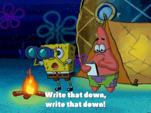
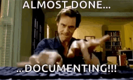

After years of being at school, your first time at work be it an internship or a full-time role might be a little overwhelming as there's a complete shift in paradigm. My story was no different, I was clueless most of the time for the first few weeks but later figured it out with time. I had the opportunity to learn and grow so much in such a short span of time. Of all the things that I learnt here are the top 5 that I value the most.
It's okay to ask for help
Asking for help has always been tough. And given a new environment with a completley new set of people it only made it even more difficult. There was this one time where I thought I'd figure it out on my own, and later ended up having to redo two weeks worth of work from scratch. Seeking help can save you a lot of time and help develop a rapport with your peers. Before asking make sure you have tried solving and note down the right questions to ask as it makes the process a lot easier and efficient as well.
Be more observant
Given any day, there is something or the other that is going to happen and you might really not understand what is going on. But keep your eyes and ears open and try to pay attention as much as possible. Even though it might be all greek and latin, things will slowly start to make more sense with time and all the observations you do will surely help your understanding better in the longer run.
Prepare for meetings
Meetings are an inevetiable part of the work routine. There are different kinds, but making sure you stay prepared for each of them is only going to make it easier. If it is a meeting where you have to present, reharse ; if it is one where you have to listen do your homework and make sure you understand what the meeting is about so that you'll be able to clarify your doubts if any and so on so forth.
Look up to your mentors and peers
When you are a fresher, chances are you will be surrounded with people of years of experience as part of your team. They know a lot of things that usually comes along with expertise but that can't really be taught, but only be picked up by understanding and observing how they do it. Be it the shortcuts to use in vscode, communicating amongst the team, approach to solving the problem and the list is endless. So whenever you have the opportunity or have a one-on-one session with your mentor / peer make sure you look out for these and keep note as they can come in really handy in the longer run.
Maintain a Journal
This is more of a personal choice. It need not be a journal, but maintaining some form of a tracking system where you can record all your learnings, take notes, track progress and document your day-to-day routine, wins and looses helps you in reflecting on the work that you do and gradually get better at it too. Also as a lot of learning happens on an every day basis documenting can really come in handy when you need to refer to things at a later point in time.
Every job, every team and every project is completley different. But I feel these five pointers are applicable irrespective of all the above. Make the most of it while at work and keep on learning. Be sure to rock the role that you are in.
If you have made it till here, thank you for taking the time to read this and I hope you found it useful.
Until next time 😄